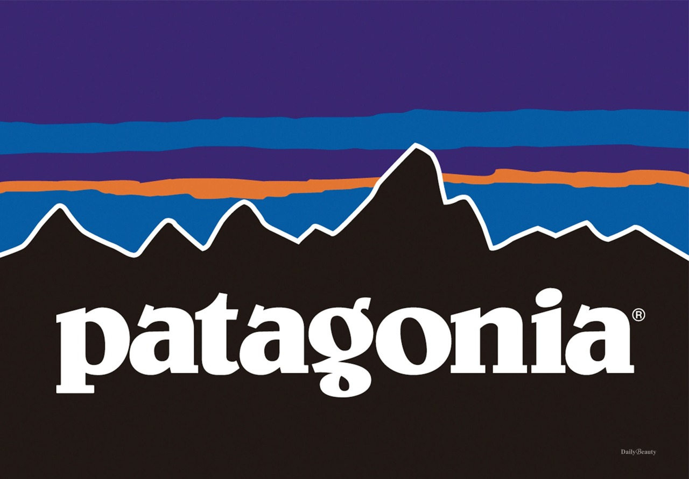

'파타고니아'의 사명 "우리는 우리의 터전, 지구를 되살리기 위해 사업을 합니다"(We' re Business to save our home planet)
미국 친환경 아웃도어 브랜드 '파타고니아' 는 의류 브랜드 임에도 불구하고 옷을 사지 말라는 파격적인 광고 문구를 보여주었다. 그 이유는 재킷 하나 만들려면 목화 생산에 물 135L가 소비되고, 이 제품의 60%는 재활용 소재를 이용해 생산된다.
이 과정에서 20파운드의 탄소 배출이 되었는데 이는 완제품 무게의 24배나 되는 양이다. 게다가 아무리 오래 입다가 버린다 해도 완성품의 2/3만큼의 쓰레기가 남는다. 위와 같은 이유로 파타고니아는 기업에서 제품 생산을 줄여 불필요하게 자연을 훼손하는 일을 줄여야 한다고 말하고 있다.
'파타고니아'는 망가진 옷을 고쳐 입자!'라는 캠페인도 진행하고 있다. 튼튼하게 오래 입을 수 있는 옷을 만드는데 최선을 다하지만, 많이 입어서 낡아졌거나 수선이 필요한 경우 매장에서 물건을 받아 수선해주는 서비스도 제공하고 있으며 간단하게 수선하거나 세탁할 수 있는 방법을 홈페이지에 게재 하여 직접 고객이 자신의 옷을 잘 다룰 수 있도록 돕고 있다.
또한 '파타고니아'는 매년 매출 1%를 전세계 환경 단체에 기부하고, 기금을 만들고 지역환경을 지키기 위해 일하는 사람들을 위해 사용한다.